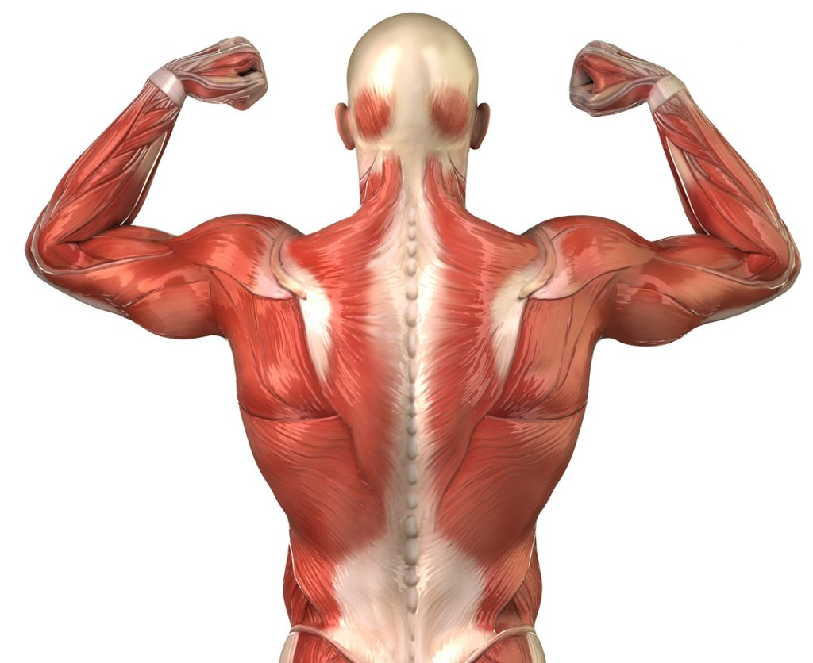

SISTEMA DE TRACCIÓN: MARTES
Regla del Fallo en Tracción
No se permite el uso excesivo de impulso. La fase negativa de cada ejercicio dura un mínimo de 3 segundos. Todo se trabaja con 1 serie previa de aproximación y 2 series de máxima carga destinadas al fallo mecánico total.
Bloque 1: Amplitud y Espesor de Espalda
• Jalón al Pecho Prono: Enfoque en los dorsales superiores, tirando con los codos hacia la cadera (1 calentamiento, 2 efectivas full fallo).
• Remo Gironda Sentado (Barra Larga): Tracción directa hacia la parte alta del abdomen, separando escápulas al estirar para densificar los romboides y trapecio medio (1 calentamiento, 2 efectivas full fallo).
• Jalón en Polea Alta Unilateral: Trabajo de aislamiento puro para corregir asimetrías en el dorsal ancho (1 calentamiento, 2 efectivas full fallo).
• Remo Recargado en Banco (~35°): Apoyo total del pecho para eliminar por completo la tensión lumbar y aislar la tracción pesada (1 calentamiento, 2 efectivas full fallo).
• Hiperextensiones en Banco Romano (Espalda Baja): Flexión exclusiva de cintura manteniendo la columna neutra para fortalecer los erectores espinales (1 calentamiento, 2 efectivas full fallo).

Bloque 2: Flexión de Brazos (Bíceps)
• Curl Predicador en Máquina: Brazo completamente apoyado para anular el hombro y generar un aislamiento pico en la cabeza corta del bíceps (1 calentamiento, 2 efectivas full fallo).
• Curl Martillo en Polea: Enfoque directo en el supinador largo y braquial anterior para dar grosor al brazo (1 calentamiento, 2 efectivas full fallo).